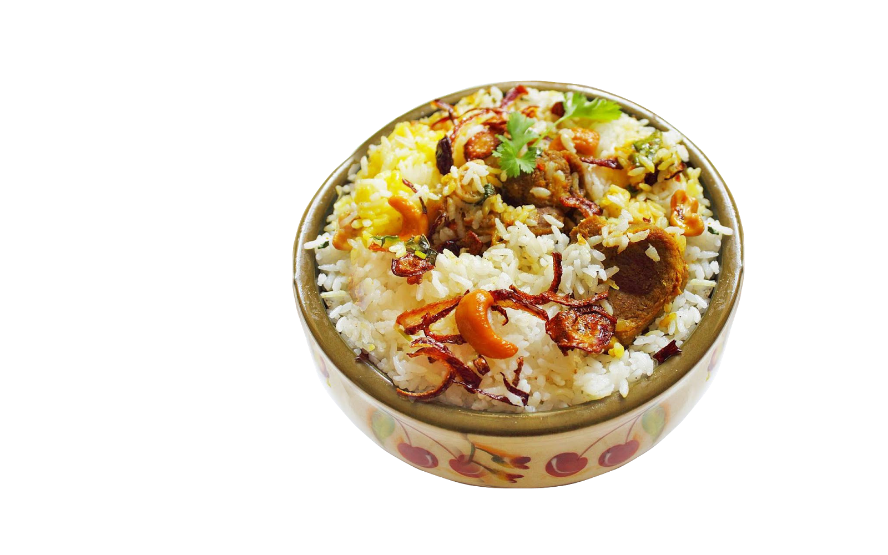
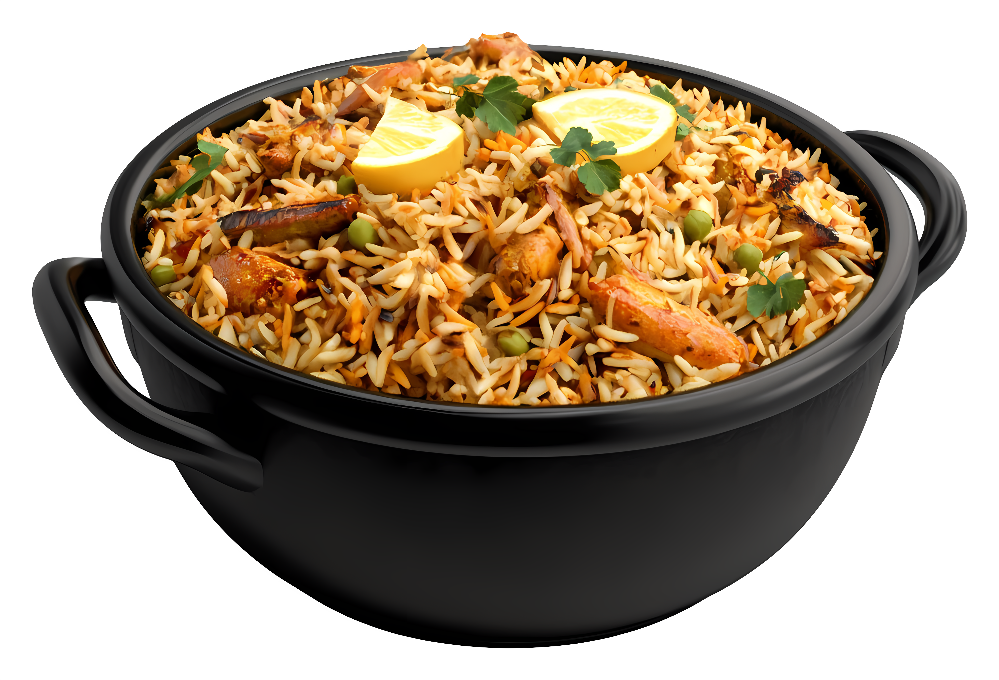
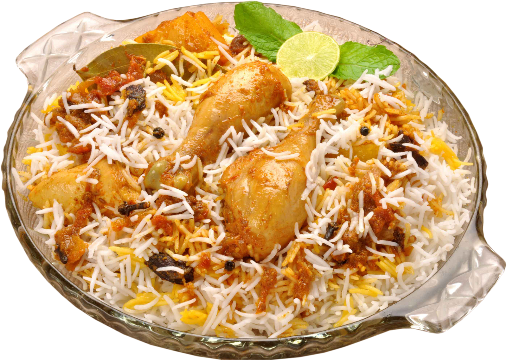

THALASSERY BIRIYANI
PRICE : 180

KOLKATA BIRIYANI
PRICE : 190

HYDRABADI BIRIYANI
PRICE : 170
ABOUT US
At Biriyani Kada, we believe biryani is more than just a meal — it's a tradition. Rooted in the rich culinary heritage of Kerala, we specialise in authentic dum biryani crafted with the finest long-grain basmati rice, hand-picked spices, and tender, slow-cooked meats. Every plate we serve is prepared fresh, in small batches, using time-honoured recipes that balance aroma, flavour, and texture to perfection. From our signature chicken, mutton, beef, egg, and vegetable biryanis to traditional Kerala sides like salna, chutneys, and pickles, each dish is a celebration of Malabar's vibrant food culture. Whether you're craving a quick, comforting lunch or planning a special family daawat, Biriyani Kada brings the warmth of a home-cooked biryani to your table — fresh, generous, and full of flavour, every single time.
"Cooked with love. Served with pride."
CONTACT US


call us : +91 9945544547
hours : all day 11 am to 11pm
location : Near Lavanya Nagar, Kakanad